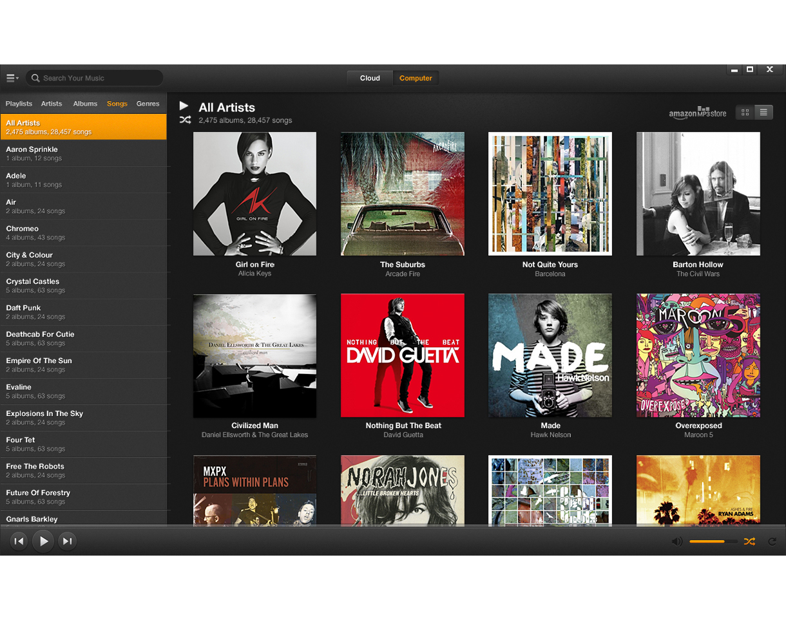
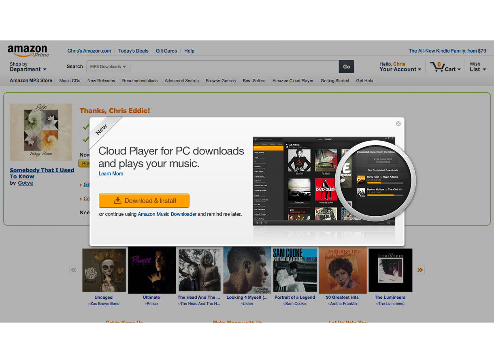
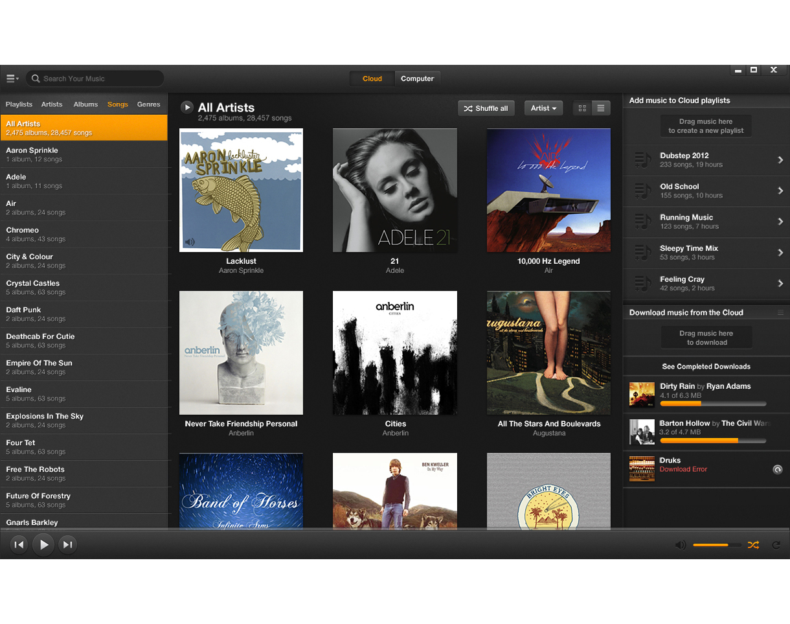
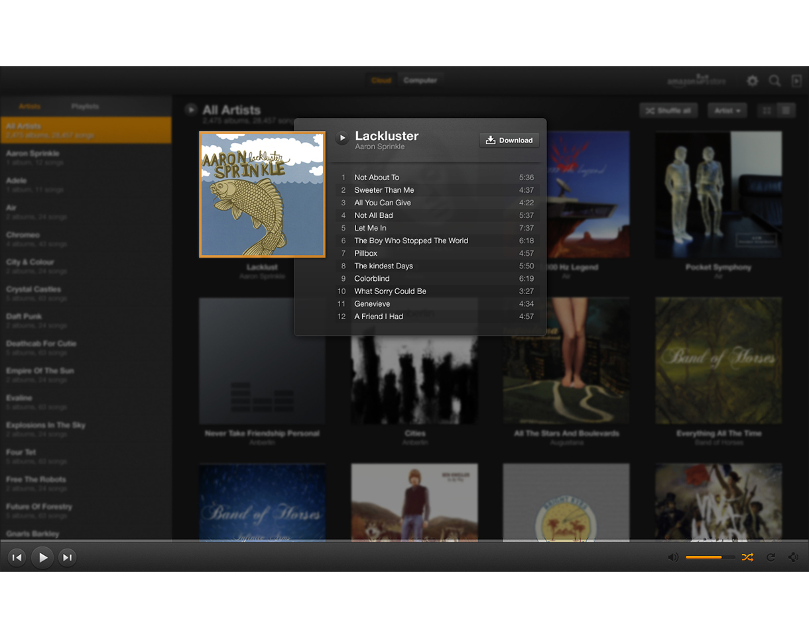

chriseddie.com / Amazon Music
chriseddie.com / Amazon Music
Cloud Player Desktop app
While working at the digital music development center for Amazon in San Francisco, I had the opportunity to lead the design of Amazon’s largest native software release to date. The Amazon Cloud Player desktop app.

Amazon Cloud Player for PC. Known today at Prime Music.
The two primary features of the Cloud Player app were to serve as a vehicle for downloading purchased content from Amazon.com and importing music to cloud storage. Traditionally, the only way to download purchases was to use a peice of native software called the Amazon Music Downloader (AMD). Importing music would require another peice of software called the Amazon Music Importer (AMI).

Download prompt after purchase of music from Amazon.com
At the time of it’s development, the Cloud Player app was meant to serve an even greater purpose as the utility for side-loading content to Amazon devices such as the Kindle Fire and Fire Phone. When considering side-loading, uploading to the Amazon Cloud, Downloading to device, or making playlists, it became clear to me that the largest painpoint and requested features from users was the ability to take music from it’s source and move it to different destinations.
Instead of designing a different method of moving music for each use case, I created a sidebar on the right for all destinations. Music could be dragged from the source (cloud or computer) and dropped onto a destination.

Source toggle defines cloud or computer music and provides all possible destinations in the sidebar.
With a large library of content, performance became something we had to remain cognizant of. Instead of navigating away from the main library to show the details of an album, I designed a quick access point to songs using a modal / popover display.

Album details shown quickly onClick.
The Cloud Player native app has now been adapted to the Amazon Music app. Amazon’s streaming subscription music service.
Date: 2012 - 2013
Company: Amazon (A2Z Development Center)
Project: Cloud Player Native
Role: UX Designer
Team: 20 software engineers, 1 product manager.